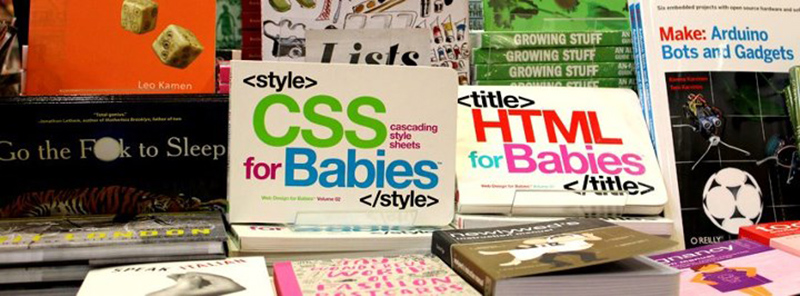
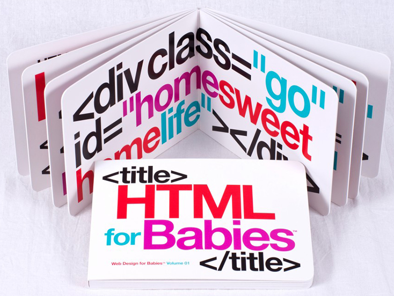
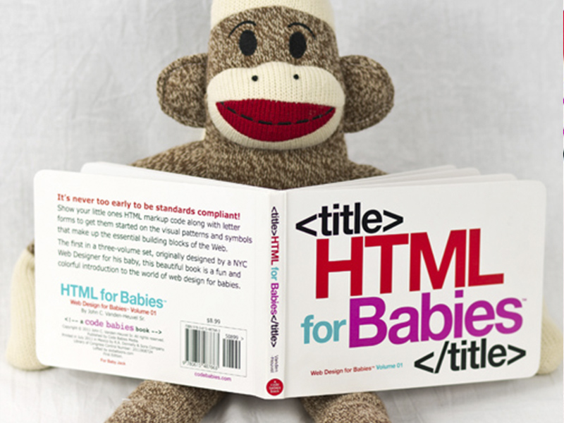

Code Babies (http://codebabies.com) é um projeto inusitado, e que está fazendo muito sucesso com os papais e mamães Web Designers. Trata-se de livros sobre CSS e HTML desenvolvidos baseado em bebês! Isso mesmo, o livro contém 16 páginas, no formato 5 x 7, com tipografia bem colorida e em negrito. Os livros CSS for Babies e HTML for babies podem ser encontrados no Amazon, por $ 8,99.
Para muitos pode parecer bizarro, mas a percepcão visual dos pequenos é muito grande. Por pura coincidência, nesse final de semana fui em uma festa no colégio do meu irmão e ele me mostrou o projeto que estava desenvolvendo na aula de informática. Trata-se de um software desenvolvido para crianças que, através de sintaxe específica, eles criam imagens. Na prática, é programação para crianças! O código precisa ser aberto e fechado, possui variáveis e outros atributos. Dessa forma, desde criança estão trabalhando questões de lógica e programação.
 